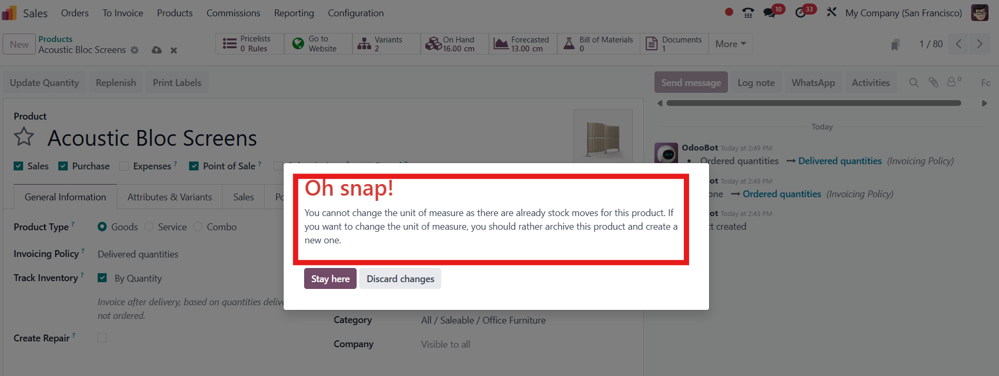
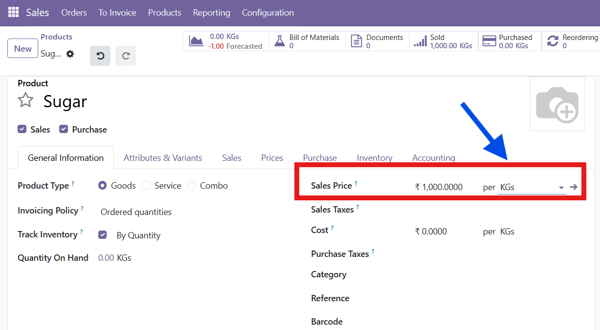
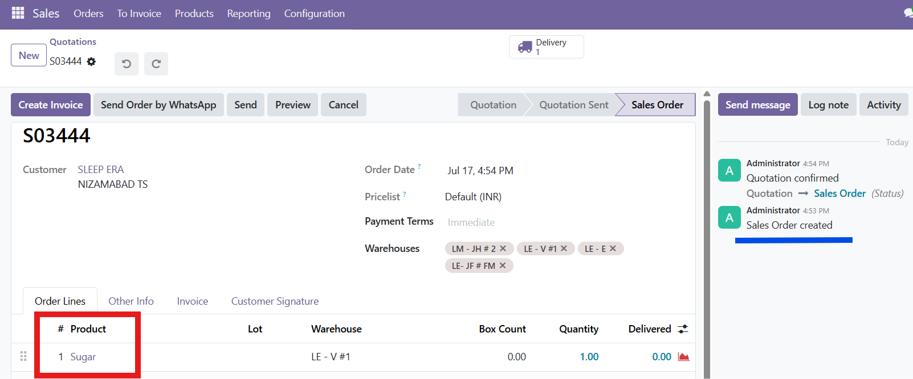
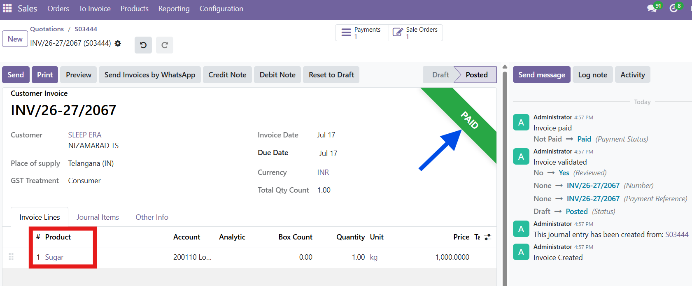

CHANGE PRODUCT UOM ANYTIME UNLOCK. UPDATE. MOVE ON.
NO ARCHIVING • NO DUPLICATE PRODUCTS • WORKS WITH EXISTING STOCK MOVES • INSTANT UOM CHANGE
The Change Product UoM module removes Odoo's default restriction that blocks editing a product's Unit of Measure once it has been used in stock moves, sales, purchases, invoices or manufacturing orders. Change the UoM directly on the product form at any time — historical documents keep the UoM they were originally created with, only the product's default UoM is updated for future use.

Key Highlights
Change UoM Even After Stock Moves
Update a product's Unit of Measure at any time — even after it has been used in Sales Orders, Purchase Orders, Invoices, Deliveries or Manufacturing Orders.
No More Archive-and-Recreate
Skip the old workaround of archiving a product and creating a fresh one just to correct a wrong Unit of Measure.
Historical Documents Stay Intact
Every existing Sale Order, Purchase Order, Invoice and stock move keeps the UoM it was originally recorded with; only future transactions use the new default.
Works On Any Product Type
Applies to Goods products, including those tracked by Lot or Serial Number, regardless of Sales, Purchase, Point of Sale or Manufacturing usage.
Zero Configuration
Install the module and the restriction is lifted immediately — no settings screen, no setup wizard, no extra steps.
Same Familiar Product Form
No new menus or screens. The Unit of Measure field on the standard Product form simply becomes editable.
Change Product UoM
Stop archiving products just to fix a wrong Unit of Measure.
Edit the UoM directly, any time, on any product.
| info@areterix.com | 🌐 areterix.com |

The Default "Oh Snap!" Block
In standard Odoo, opening a product that already has stock moves and trying to change its Unit of Measure triggers an error: "You cannot change the unit of measure as there are already stock moves for this product." The only official workaround is to archive the product and create a new one.

The Product Starts Out In "KGs"
A sample product is created with Track Inventory By Lots enabled and its Unit of Measure set to KGs. This is the UoM every transaction for this product will use until it is deliberately changed.

Sold Under the Original UoM
The product is added to a Sales Order and confirmed, creating a real stock move against it — exactly the kind of usage that normally locks a product's Unit of Measure in standard Odoo.

Still Locked in Standard Odoo
The related invoice is posted and marked Paid for the same product. Normally, this alone is enough for Odoo to permanently block any further change to the product's Unit of Measure.

The Same Product Switched From KGs to Pcs
With this module installed, the same product — already used in a confirmed Sales Order and a paid Invoice — has its Unit of Measure changed from KGs to Pcs directly on the product form. No "Oh snap!" warning, no archiving, no recreating the product.

Removes Odoo's default restriction that blocks Unit of Measure changes for products already used in stock moves.
Works even when the product has confirmed Sales Orders, Purchase Orders, Deliveries, Manufacturing Orders or posted Invoices.
No "Oh snap!" warning — the Unit of Measure field on the product form simply stays editable and savable.
Historical documents are untouched: existing Sale Orders, Purchase Orders, Invoices and stock moves keep the UoM they were created with.
Only the product's default Unit of Measure is updated for future transactions.
No new menus, wizards or settings — the change happens on the standard Product form you already use.
No configuration required after installation; the restriction is lifted automatically for every product.
Designed, tested and structurally verified across Odoo 19 Community and Enterprise Edition.
FAQ
Standard Odoo blocks changing a product's Unit of Measure once the product appears in any stock move, Sale Order, Purchase Order, Invoice or Manufacturing Order. This module removes that restriction so the UoM field stays editable on the product form at any time.
No. Historical Sale Orders, Purchase Orders, Invoices and stock moves keep whatever Unit of Measure was recorded on them at the time they were created. Only the product's default UoM changes, and only future transactions use it.
No. The warning that normally blocks the change is removed entirely, so the Unit of Measure field can be edited and saved like any other product field, without archiving the product first.
The Quantity On Hand and Forecasted figures continue to display against the product's current Unit of Measure. Since only the UoM label changes, review the recorded quantities after switching to confirm they reflect what you expect for the new unit.
No configuration is needed. Once installed, the restriction is removed automatically for every product — simply open the product form, change the Unit of Measure field, and save.
This module is designed, tested and structurally verified across Odoo 19 Community and Enterprise Edition. Use it with care: switching between Units of Measure from different categories (for example, Unit to Weight) can change how existing recorded quantities are interpreted, since only the product's default UoM is updated and historical documents are left as they were.
Version 19.0.1.0.0
15 April 2026- Removes the default Odoo restriction blocking Unit of Measure changes for products used in stock moves, Sales Orders, Purchase Orders, Invoices or Manufacturing Orders.
- Unit of Measure field remains editable on the standard Product form at all times.
- Historical Sale Orders, Purchase Orders, Invoices and stock moves retain their original UoM.
- Only the product's default Unit of Measure is updated for future transactions.
- No configuration or setup required after installation.
- Works with Goods products, including those tracked by Lot or Serial Number.
- Compatible with Odoo 19 Community and Enterprise Edition